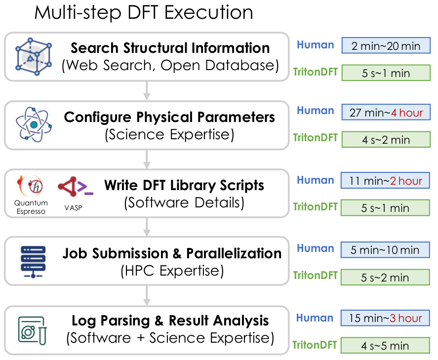
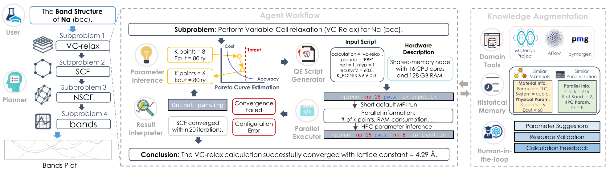
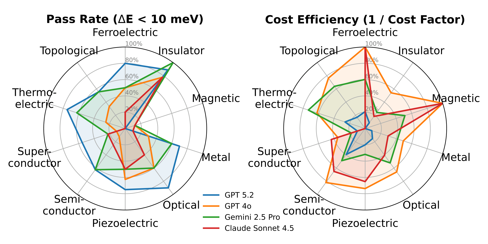

TritonDFT is a multi-agent LLM framework that automates Density Functional Theory end-to-end. Describe what you want — get publication-ready results.
We surveyed 19 PhD-level DFT researchers. Every step of a DFT workflow — searching structures, picking parameters, writing scripts, launching jobs, parsing output — takes minutes to hours of manual work. TritonDFT collapses each step to seconds.

Each agent owns one slice of the DFT pipeline. They share a knowledge base, call task-specific tools, and iterate until the result converges.
Decomposes your natural-language query into computational steps, selects DFT methods, and maps tasks to executables.
Generates Quantum ESPRESSO input files, launches HPC jobs, and streams output back to the loop.
Parses results, validates convergence, computes properties (band gap, lattice constants, forces).
Pareto-optimizes accuracy vs. cost — adjusts cutoffs, k-grids, and functionals iteratively.

We built DFTBench, a benchmark spanning science expertise, trade-off optimization, HPC knowledge, and cost efficiency. Here is what TritonDFT delivers.

End-to-end Si vc-relax → scf → band-gap calculation, narrated by the agent loop.